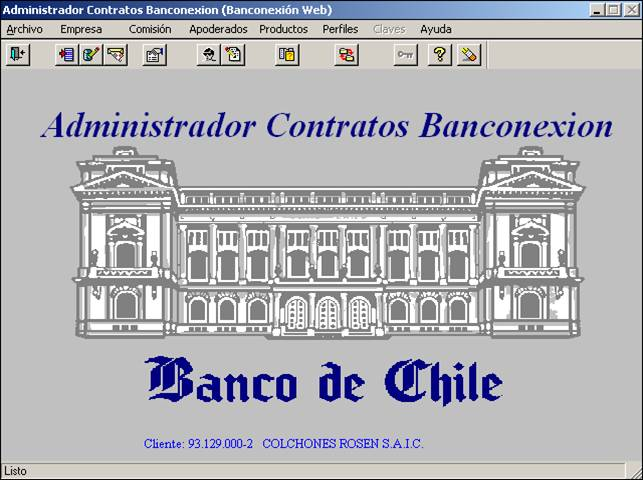

Permisos - Generalidades
Gracias al desarrollo de este módulo, el usuario interno podrá asignar permisos para operar en el nuevo Portal web a Empresas, Usuarios y Aplicaciones. Lo anterior, dependerá de los roles que les han sido otorgados.
Actual
Administrador de Contratos Banconexion


CARACTERISTICAS APLICACIÓN PERMISOS
El nuevo módulo de Permisos permite que la asignación de permisos de usuarios sea mucho más acotada, lo que otorga mayor flexibilidad en la distribución de los roles de las Empresas.
Actualmente esta función se realiza en el Administrador de Contratos de Banconexión, con una interfaz mucho menos amigable, menos intuitiva y compleja de operar, lo que induce a errores y pérdidas de tiempo.


Permisos - Administrador Empresas

Caracteristicas
La nueva aplicación tiene una amplia gama de funcionalidades en la administración de empresas y sus servicios, un look innovador, sencillo y claro, que facilitará el trabajo a los usuarios internos. Cuenta con:
- Motores de búsqueda
- Paginación
- Consola de estados de Creación y cantidad de Empresas.
- Modificador de N° empresas por pagina.
- Vista rápida de perfil de la empresa.
- Seguridad y confiabilidad de datos.
La aplicación entrega la flexibilidad de tener una empresa creada y en paralelo crear un nuevo flujo para modificar sus atributos (aplicaciones o cuentas), de forma tal que solo cuando este nuevo flujo sea aprobado se elimina la empresa con los atributos anteriormente definidos.
Lo anterior implica que durante el proceso de modificación de una empresa, no se detiene su funcionamiento.

Permisos - Crear Empresas
Creación de Empresas simplificado e intuitivo, que facilita y ahorra tiempos en el proceso de ingreso. Para acceder a crear empresa, el usuario banco debe ir al menú principal/Admin. y Seguridad/Administrador Empresas y hacer click en botón “Crear Empresa”.

Al guardar, la empresa queda en Estado “En Proceso” e ingresa al flujo de creación, pasando por los estados: En Proceso > Por Autorizar > Creada/Rechazada. Al hacer click en botón “Enviar a Autorizar”, la empresa queda en estado “Por Autorizar”
Vista para “Enviar a Autorizar”
El mismo usuario Banco que genera el estado “en Proceso”, debe enviar a la Empresa al estado “Por Autorizar”. Para esto en la edición de la empresa debe presionar el botón “Enviar a Autorizar”
 4
4
Vista para “Autorizar” o “Rechazar”
Luego, un usuario Banco distinto será quien finalmente autorice (o rechace) el cambio, dejando a la empresa en el estado “Creada” o “Rechazada”.
 5
5
IMPORTANTE:
En caso de requerir modificar una Empresa ya existente, se debe buscar en la sección “Búsqueda Avanzada” del Administrador de Empresas, luego editarla (haciendo Click en botón de acción) y guardar cambios. La empresa volverá a estado “En Proceso” y se deben repetir pasos 4 Y 5.
Permisos - Eliminar Empresas
En el nuevo Portal el proceso de eliminación de Empresas ya creadas es simple e intuitivo y ahorra tiempos con respecto al proceso actual. Para acceder a eliminar una empresa, el usuario banco debe ir al menú principal Adm. Y Seguridad/Administrador de Empresas, buscar la empresa en la sección “Búsqueda Avanzada” e ingresar al modo edición. La empresa pasará por los estados “Creada” >”Por Eliminar “> “Eliminada”
Vista para “Enviar a Eliminar”
Una vez que el usuario ingrese al modo edición de la empresa creada, deberá presionar botón “Enviar a Eliminar”. Tras esto, pasará desde el estado “Creada” al estado “Por Eliminar”

Vista para “Autorizar Eliminación”
Luego, un usuario banco distinto será quien finalmente elimine la empresa. Para esto, deberá ingresar al modo edición, y hacer click en el botón “Autorizar Eliminación”, tras lo cual la empresa quedará en estado “Eliminada”

Permisos - Administrador Usuarios

Caracteristicas
Esta nueva herramienta entrega la facilidad de manejar los perfiles de los usuarios, tanto a nivel de aplicaciones como empresas, restringiendo para operar solo con las facultades que tenga asignadas el usuario.
Contempla un diseño más rico en información, una visión mas clara y un look innovador con altos niveles de seguridad y confiabilidad de datos.
Trabaja y consulta en línea con los registros del banco, lo que permite que los cambios solicitados se efectúen en forma inmediata.
La aplicación entrega la flexibilidad de tener un usuario creado y en forma paralela crear un nuevo flujo para modificar sus atributos (empresas, aplicaciones, roles y/o cuentas), de forma tal que solo cuando este nuevo flujo sea aprobado se elimina el usuario con los atributos anteriormente definidos.
Lo anterior implica que durante el proceso de modificación de un usuario, no se detiene su funcionamiento.
Permisos - Crear Usuario
Creación de usuarios simplificado e intuitivo, que facilita y ahorra tiempos en el proceso de ingreso. Para acceder a crear usuario, el usuario banco debe ir al menú principal/Admin. y Seguridad/Administrador Usuarios y hacer click en botón “Crear Usuario”.

Al guardar, el usuario queda en estado “En Proceso” e ingresa al flujo de creación, pasando por los estados: En Proceso > Por Autorizar > Creado/Rechazado. Al hacer click en botón “Enviar a Autorizar”, el usuario queda en estado “Por Autorizar”
Vista para “Enviar a Autorizar”
El mismo usuario Banco que genera el estado “en Proceso”, debe enviar al usuario al estado “Por Autorizar”. Para esto en la edición del usuario presionar el botón “Enviar a Autorizar”.
 7
7
Vista para “Autorizar” o “Rechazar”
Luego, un usuario Banco distinto será quien finalmente autorice (o rechace) el cambio, dejando al usuario en el estado “Creado” o “Rechazado”.

IMPORTANTE:
En caso de requerir modificar un usuario ya existente, se debe buscar en la sección “Búsqueda Avanzada” del Administrador de usuarios, luego editarlo (haciendo Click sobre botón de acción) Y guardar los cambios, el usuario volverá al estado “En Proceso” y se deben repetir pasos 7 y 8. Si se “Envía a Autorizar”, el usuario quedará en estado “Por Autorizar” y se debe repetir el paso 8.

Permisos - Eliminar Usuario
En el nuevo Portal el proceso de eliminación de Usuarios ya creados es simple e intuitivo y ahorra tiempos con respecto al proceso actual. Para acceder a eliminar un usuario, el usuario banco debe ir al menú principal Adm. Y Seguridad/Administrador de Usuarios, buscar al usuario en la sección “Búsqueda Avanzada” e ingresar al modo edición. El usuario pasará por los estados “Creado” >”Por Eliminar “> “Eliminado”
Vista para “Enviar a Eliminar”
Una vez que el usuario banco ingrese al modo edición del usuario creado, deberá presionar botón “Enviar a Eliminar”. Tras esto, pasará desde el estado “Creado” al estado “Por Eliminar”

Vista para “Autorizar Eliminación”
Luego, un usuario banco distinto será quien finalmente elimine al usuario. Para esto, deberá ingresar al modo edición, y hacer click en el botón “Autorizar Eliminación”, tras lo cual el usuario quedará en estado “Eliminado”